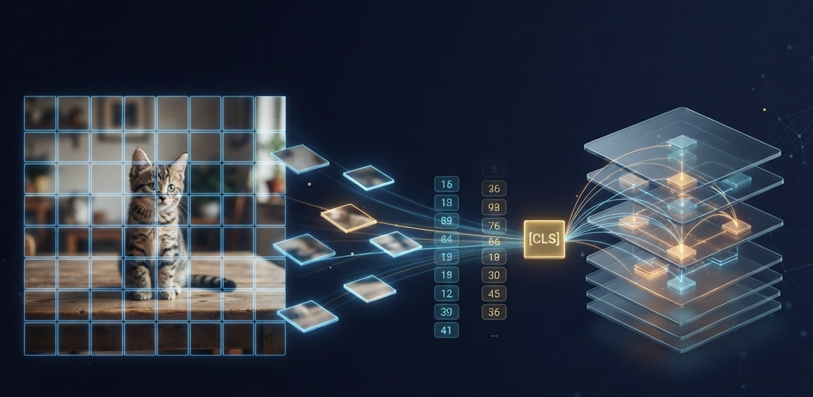
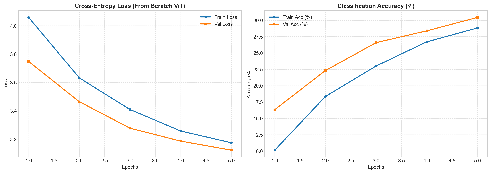

| Epoch | Train Loss | Train Acc | Val Loss | Val Acc |
|---|---|---|---|---|
| 1 | 4.059 | 10.14% | 3.748 | 16.33% |
| 2 | 3.632 | 18.35% | 3.464 | 22.31% |
| 3 | 3.409 | 23.01% | 3.277 | 26.57% |
| 4 | 3.257 | 26.69% | 3.186 | 28.38% |
| 5 | 3.174 | 28.82% | 3.122 | 30.43% |
Vision Transformer From Scratch: Treating an Image Like a Sentence
Computer Vision
Transformers
PyTorch
Deep Learning
A line-by-line walkthrough of building a Vision Transformer in pure PyTorch — patch embedding with Conv2d, the [CLS] token, learnable positional encodings, multi-head self-attention, Pre-Norm encoder blocks — and training it on CIFAR-100 with no pre-training.

For a decade, “computer vision” meant “convolutions”. Local filters, weight sharing, pooling — the architecture itself told the model that nearby pixels matter more than distant ones.
Then the Vision Transformer (ViT) showed up and asked a blunt question: what if we throw all of that away and just treat an image like a sentence?
In this project, I built a ViT from scratch in PyTorch — no timm, no nn.TransformerEncoder, no pre-built attention layers. Every component (patch extraction, the [CLS] token, positional embeddings, multi-head self-attention, the encoder block) is written by hand so the mechanics are fully visible. I then trained it on CIFAR-100 and unit-tested every layer’s tensor shapes.
Why Build ViT From Scratch?
Using a library ViT teaches you how to call a library. Writing one teaches you:
- Where the image becomes a sequence — and what the sequence length actually is.
- Why a classification token exists at all.
- What tensor shapes flow through multi-head attention, and where the reshapes happen.
- Why ViTs are so hungry for data and augmentation compared to CNNs.
The core trade-off:
- CNNs have a built-in inductive bias: locality and translation equivariance.
- ViTs have almost none. They must learn spatial structure from data.
- On a small dataset with no pre-training, that freedom becomes a liability — which is exactly what makes CIFAR-100 an instructive testbed.
The Architecture
The pipeline has four stages:
- Patchification: split a \(32 \times 32\) image into non-overlapping \(4 \times 4\) patches, giving \((32/4)^2 = 64\) tokens.
- Tokenisation & positional embedding: prepend a learnable
[CLS]token and add learnable 1D positional encodings — 65 tokens in total. - Transformer encoder: a stack of Pre-Norm blocks, each with Multi-Head Self-Attention (MHSA) and an MLP with GELU.
- Classification head: take the final
[CLS]representation and map it to 100 class logits.
[Input Image: 3 x 32 x 32]
│
▼ (Conv2d Patchify)
[Patches: 64 x D] ──> + [CLS Token & Positional Encodings (65 x D)]
│
▼
[Transformer Encoder Block x Depth] (Pre-Norm + MHSA + MLP)
│
▼
[Extract [CLS] Token Representation]
│
▼
[Linear Classifier Head] ──> [CIFAR-100 Logits]The repository is split so each file maps to exactly one idea:
src/
├── data/dataset.py # CIFAR-100 loaders + augmentation
├── models/
│ ├── embeddings.py # Patchification + [CLS] + PosEmbed
│ ├── attention.py # Multi-Head Self-Attention
│ ├── mlp.py # Feed-forward network
│ ├── block.py # Pre-Norm encoder block
│ └── vit.py # Full model assembly
├── engine/trainer.py # Train / evaluate loops
└── train.py # Entry point (YAML config driven)
tests/test_shapes.py # Pytest tensor-shape assertionsBuilding It: The Key Components
Patch Embedding — A Conv2d in Disguise
Cutting an image into patches, flattening each one and applying a shared linear projection is mathematically identical to a convolution whose kernel size equals its stride. So the whole step is one nn.Conv2d:
class PatchEmbedding(nn.Module):
def __init__(self, in_channels=3, patch_size=4, emb_dim=64, image_size=32):
super().__init__()
self.num_patches = (image_size // patch_size) ** 2
self.projection = nn.Conv2d(
in_channels, emb_dim,
kernel_size=patch_size, stride=patch_size
)
def forward(self, x): # (B, 3, 32, 32)
x = self.projection(x) # (B, D, 8, 8)
x = x.flatten(2) # (B, D, 64)
return x.transpose(1, 2) # (B, 64, D)- Each of the 64 patches (48 raw values: \(4 \times 4 \times 3\)) is projected to a \(D\)-dimensional token.
- The “stride = kernel” trick means no patch overlaps and no pixel is seen twice.
- This is the only convolution in the whole model — and it is just a fast linear layer.
[CLS] Token and Positional Embeddings
Self-attention is permutation-invariant: shuffle the patches and the output is just shuffled too. Two additions fix this and give us something to classify with:
self.cls_token = nn.Parameter(torch.randn(1, 1, emb_dim))
self.pos_embed = nn.Parameter(torch.randn(1, num_patches + 1, emb_dim))
nn.init.trunc_normal_(self.cls_token, std=0.02)
nn.init.trunc_normal_(self.pos_embed, std=0.02)
def forward(self, x):
B = x.shape[0]
x = self.patch_embed(x) # (B, 64, D)
cls = self.cls_token.expand(B, -1, -1) # (B, 1, D)
x = torch.cat((cls, x), dim=1) # (B, 65, D)
return self.dropout(x + self.pos_embed) # + learnable positions- The
[CLS]token is a learned vector that attends to every patch; by the last layer it acts as a summary of the whole image. - The positional embeddings are learned, not sinusoidal — the model discovers for itself that patch 9 sits below patch 1.
- Small-std truncated-normal init keeps early training stable.
Multi-Head Self-Attention
class MultiHeadAttention(nn.Module):
def __init__(self, emb_dim=64, num_heads=8, dropout=0.1):
super().__init__()
self.head_dim = emb_dim // num_heads
self.qkv_projection = nn.Linear(emb_dim, emb_dim * 3)
self.out_projection = nn.Linear(emb_dim, emb_dim)
def forward(self, x):
B, N, D = x.shape
q, k, v = self.qkv_projection(x).chunk(3, dim=-1)
# (B, N, D) -> (B, heads, N, head_dim)
q = q.view(B, N, self.num_heads, self.head_dim).transpose(1, 2)
k = k.view(B, N, self.num_heads, self.head_dim).transpose(1, 2)
v = v.view(B, N, self.num_heads, self.head_dim).transpose(1, 2)
out = F.scaled_dot_product_attention(
q, k, v, dropout_p=self.dropout if self.training else 0.0
)
out = out.transpose(1, 2).contiguous().view(B, N, D)
return self.out_projection(out)- Q, K and V come from a single fused linear layer and are split with
.chunk— one matmul instead of three. F.scaled_dot_product_attentioncomputes \(\text{softmax}\!\left(\frac{QK^T}{\sqrt{d_k}}\right)V\) using PyTorch’s fused kernels, so we get FlashAttention-style efficiency where available.- The
assert emb_dim % num_heads == 0guard catches bad configs early.
Pre-Norm Encoder Block
class TransformerEncoderBlock(nn.Module):
def forward(self, x):
x = x + self.attn(self.norm1(x)) # Pre-norm attention + residual
x = x + self.mlp(self.norm2(x)) # Pre-norm MLP + residual
return x- Pre-Norm (LayerNorm before each sub-layer) keeps the residual path clean, which makes gradients flow far more stably than the original Post-Norm — important when training from scratch.
- The MLP expands by 4x, applies GELU, and projects back: \(D \rightarrow 4D \rightarrow D\).
Assembling the Full Model
def forward(self, x):
x = self.embeddings(x) # (B, 65, D)
for block in self.encoder_blocks:
x = block(x)
x = self.norm(x)
return self.head(x[:, 0]) # [CLS] token -> (B, 100)Verifying Every Tensor Shape
Transformer bugs are usually silent shape bugs — a transposed axis still runs, it just trains badly. So tests/test_shapes.py asserts the shape at every stage:
| Component | Input | Output |
|---|---|---|
PatchEmbedding |
(B, 3, 32, 32) | (B, 64, D) |
ViTEmbeddings |
(B, 3, 32, 32) | (B, 65, D) |
MultiHeadAttention |
(B, 65, D) | (B, 65, D) |
TransformerEncoderBlock |
(B, 65, D) | (B, 65, D) |
VisionTransformer |
(B, 3, 32, 32) | (B, 100) |
pytest tests/The Experiment: Training on CIFAR-100
Model configuration (driven by configs/train_cifar100.yaml):
- Patch size 4, embedding dim 128, depth 6, 8 heads, MLP expansion 4x, dropout 0.1
- Roughly 1.2M parameters — tiny by ViT standards (ViT-Base is ~86M).
Training recipe:
- Optimizer: AdamW, lr \(3 \times 10^{-4}\), weight decay 0.05
- Schedule: cosine annealing
- Loss: cross-entropy with label smoothing 0.1
- Gradient clipping at norm 1.0 to stabilise early steps
- Batch size 128, 5 epochs
Data augmentation (essential without convolutional priors):
- Random crop with 4px reflect padding
- Random horizontal flip
- Per-channel CIFAR-100 mean/std normalisation
Results

What the curves show:
- Both curves are still improving at epoch 5. Loss is falling and accuracy rising with no sign of a plateau — this is a short run, and 30.43% is a floor, not a ceiling.
- Validation beats training. That looks odd but is expected here: training metrics are measured with dropout, random crops/flips and label smoothing active, while validation uses clean images. Label smoothing also inflates the reported loss floor.
- No overfitting yet. The classic ViT failure mode on small data appears later, once the model has memorised the training set; with only 5 epochs we are still in the underfitting regime.
For context, random guessing on 100 classes is 1% — so the model is roughly 30x better than chance after about five minutes of training on a small network.
Why ViTs Struggle on Small Datasets
Without massive pre-training (ImageNet-21k, JFT-300M), a ViT has to discover things a CNN gets for free:
- That neighbouring pixels are related (locality).
- That a cat in the corner is still a cat (translation equivariance).
That is why the recipe leans so heavily on regularisation: augmentation, weight decay, label smoothing, dropout and gradient clipping. Longer training, stronger augmentation (RandAugment, Mixup, CutMix) or a smaller patch size would all be natural next steps to push accuracy higher.
Running It
git clone https://github.com/RamuNalla/vit-from-scratch.git
cd vit-from-scratch
python -m venv venv && source venv/bin/activate
pip install torch torchvision tqdm matplotlib pyyaml pytest
# Train (CIFAR-100 downloads automatically on first run)
python -m src.train --config configs/train_cifar100.yaml
# Verify tensor shapes layer by layer
pytest tests/- The best checkpoint is saved to
best_vit_cifar100.pth. - Per-epoch history is written to
docs/assets/training_history.json, which the logger turns into the plots above. - Changing depth, heads, patch size or learning rate is a one-line YAML edit.
Conclusion
A Vision Transformer is not magic — it is a Conv2d to make tokens, a learned [CLS] token and position vector, and a stack of attention-plus-MLP blocks that any NLP engineer would recognise. Writing each piece by hand makes that concrete: the whole model is about 1.2M parameters spread over five short files.
The trade-off is just as clear. With no pre-training and no convolutional prior, the model reaches 30.43% validation accuracy on CIFAR-100 in five epochs and is still climbing — a healthy start, and a reminder of why ViTs only truly shine with scale and data.
You can explore the full implementation, config and test suite in the vit-from-scratch repository on GitHub.